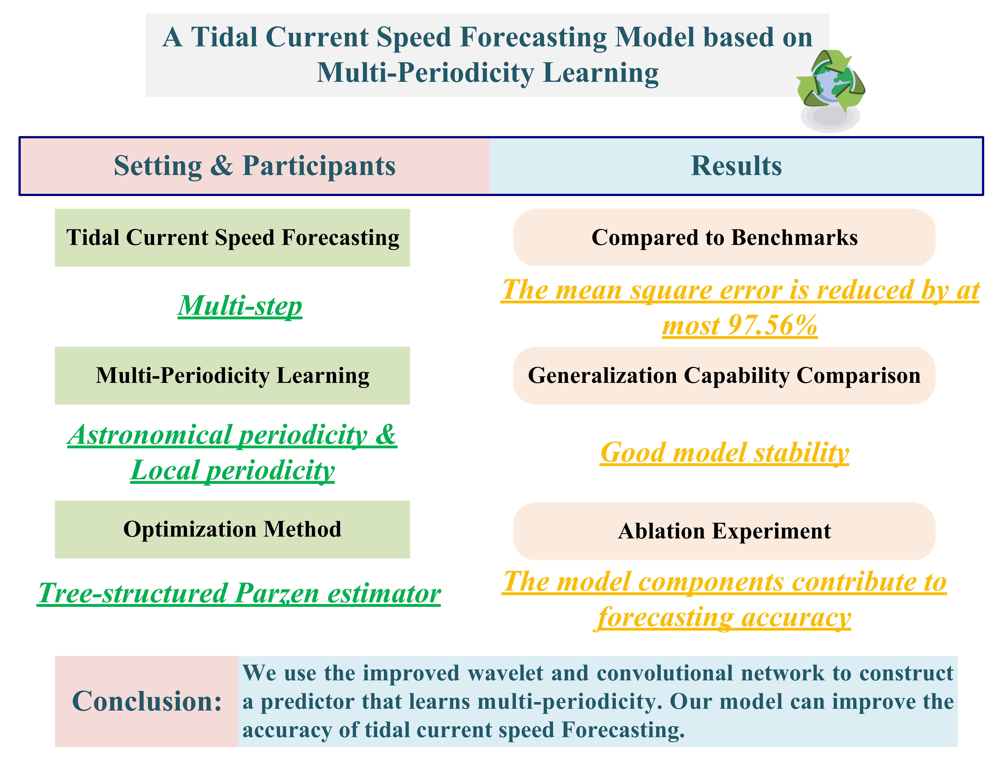
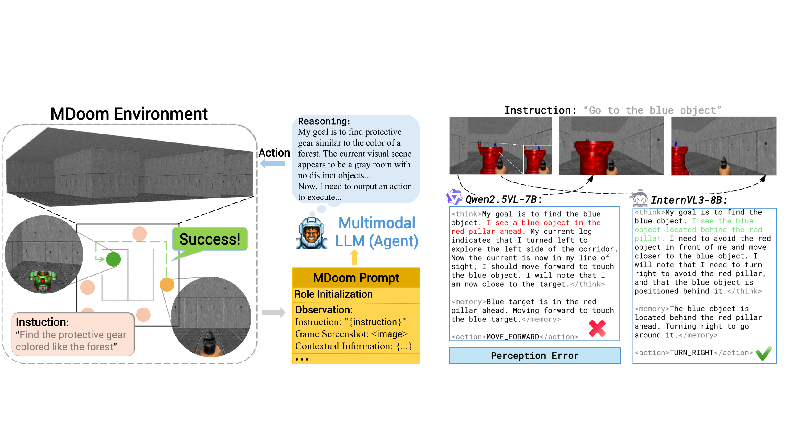
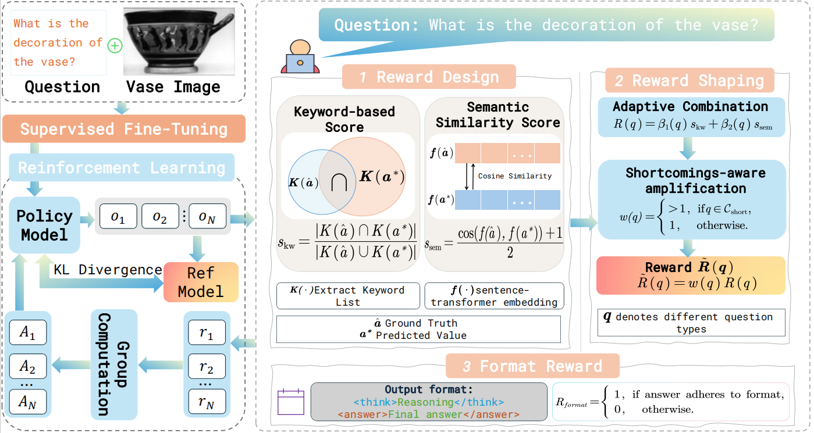

- Developed a deep learning framework, integrating wavelet-enhanced convolutional networks to capture multi-period patterns in tidal energy forecasting.
🎓 Education
Guangxi University
Bachelor of Engineering in Computer Science and Technology
09/2022 - 06/2026 (Expected)
🔬 Research Experience
 Research at Guangxi University
Research at Guangxi University
Guangxi, China
Undergraduate Researcher -- Supervised by Prof. Yunxuan Dong.
Topic: Time Series Forecasting.
03/2024 -- 06/2025
Research at the University of Liverpool
Liverpool, UK
Research Intern -- Supervised by Prof. Meng Fang.
Topic: Multimodal Agents.
06/2025 -- Present
- Developed a 3D Doom-based benchmark to evaluate instruction-following agents, revealing multimodal LLMs' deficiencies in spatial reasoning and decision-making.
- Proposed GeoSafety-Bench, a benchmark quantifying multimodal LLMs' refusal robustness against synthetic images, uncovering critical geo-safety vulnerabilities and guiding safety-oriented model design.
- Developed an evaluation-guided post-training framework to build a multimodal agent with the VaseVQA dataset (31,773 images), improving reasoning and compositional generalization in pottery attribution.
📚 Papers
* Equal Contribution, † Corresponding Author.

Tengfei Cheng, Yangdi Huang, Ling Xiao, and Yunxuan Dong†.
A Tidal Current Speed Forecasting Model Based on Multi-Periodicity Learning
With editor at Knowledge-Based Systems
arXiv:2410.09718

Tengfei Cheng*, Biao Wu*, Ke Xu, Ling Chen, Joey Tianyi Zhou, and Meng Fang†.
MDoom: A Benchmark for Evaluating Agentic Multimodal LLMs in Doom Environments
Under review at ACL Rolling Review

Jinchao Ge*, Tengfei Cheng*, Biao Wu*, Zeyu Zhang*, Shiya Huang, Judith Bishop, Gillian Shepherd, Meng Fang, Ling Chen, and Yang Zhao†.
VaseVQA: Multimodal Agent and Benchmark for Ancient Greek Pottery
Under review at ACL Rolling Review
arXiv:2509.17191
💻 Projects
Enterprise Practical Training
10/2024 -- 11/2024
Leader
- Led a team to develop a full-stack web application using the SpringBoot+Vue framework.
National Undergraduate Training Program for Innovation and Entrepreneurship
05/2024 -- 05/2025
Team Member
- Implemented gesture recognition using computer vision techniques.
- Secured provincial-level approval and received a Good rating at project completion.
🏆 Awards
- Mathematical Contest in Modeling (MCM), USA — Honorable Mention
🛠️ Skills
- Programming: Python (PyTorch), C/C++, LaTeX, Bash.
- Tools: VS Code Remote–SSH, PyCharm, Git/GitHub, Microsoft Office.
- Soft Skills: Research Writing, Teamwork, Critical Thinking, Problem Definition.
🤝 Extracurricular Activities
Badminton
- 5th place, Men's Singles, “Lotus Cup” Badminton Competition, Guangxi University.
- 1st place, Team Event, School of Computer and Electronic Information Badminton Competition.
- Level-3 Certified Referee, Badminton Association of China.
College English Course
Academic Representative
- Facilitated teaching activities and supported classmates' academic needs.